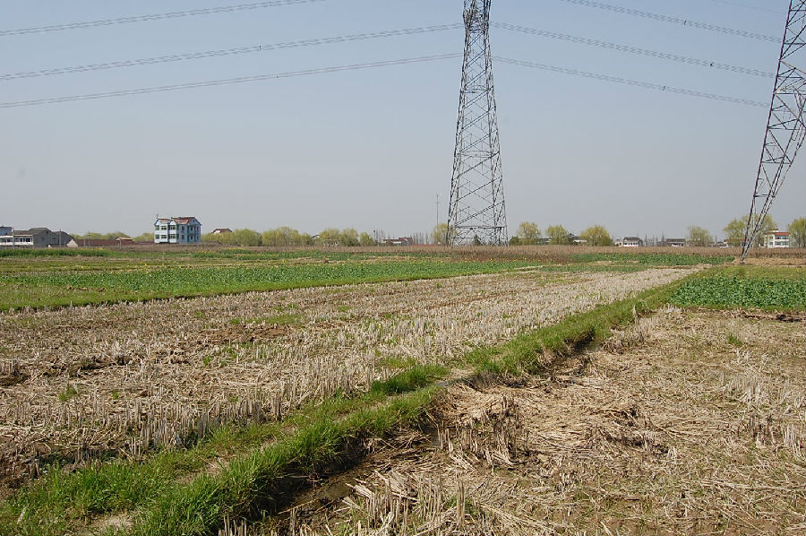
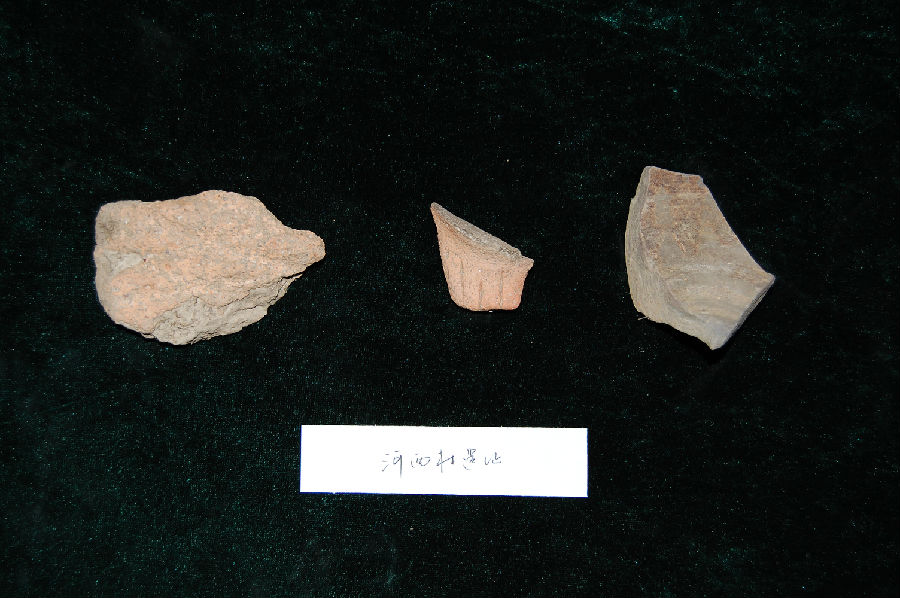

嘉兴市文物保护网 · 市级文物保护点 · 2020-11-02 · 原文


河西村遗址位于嘉兴市秀洲区王店镇清泰桥村7组河西自然村，清泰桥村委会南500米左右，东临蒋桥港，北为莲花港，面积约20000平方米。遗址高墩已无存，这次普查中在地面发现一件鱼鳍形鼎足和数件印纹陶片，据此可判断河西村遗址为新石器时代良渚文化时代至春秋战国时期的遗址。嘉兴新发现的遗址较少，河西村遗址延续时间长，分布面积广，器物类型较典型，具有较高的历史和科学价值。2009年公布为嘉兴市文物保护点。